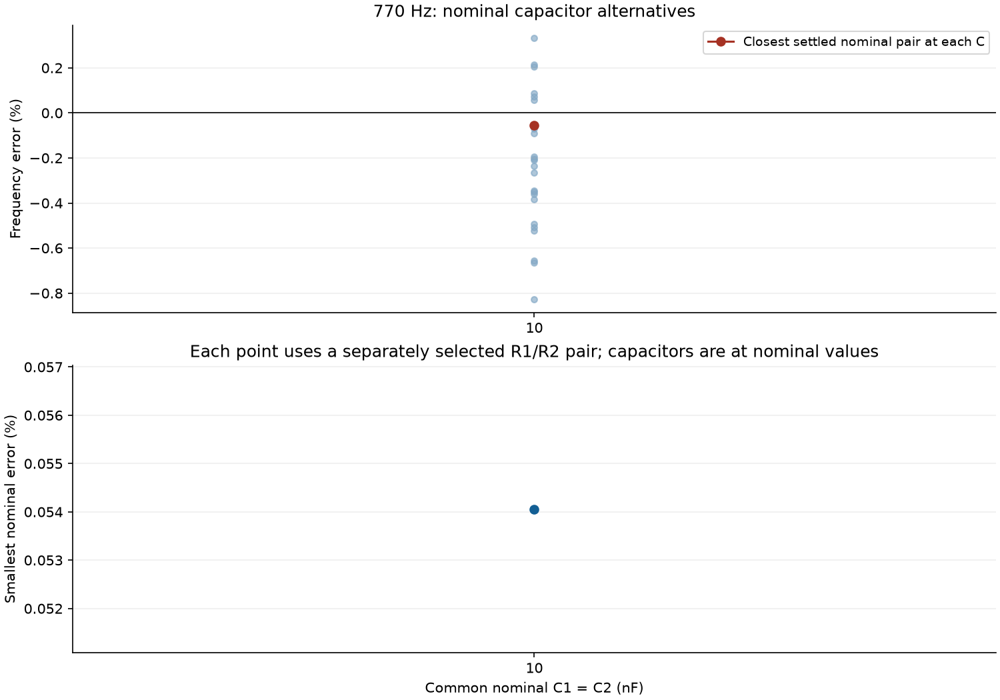
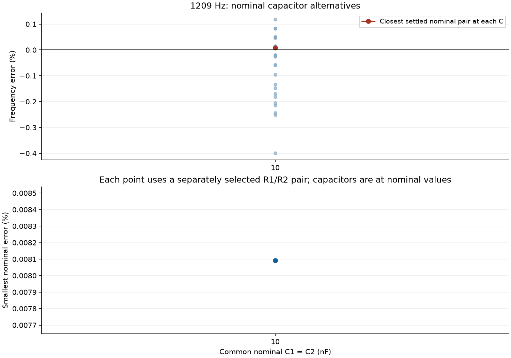
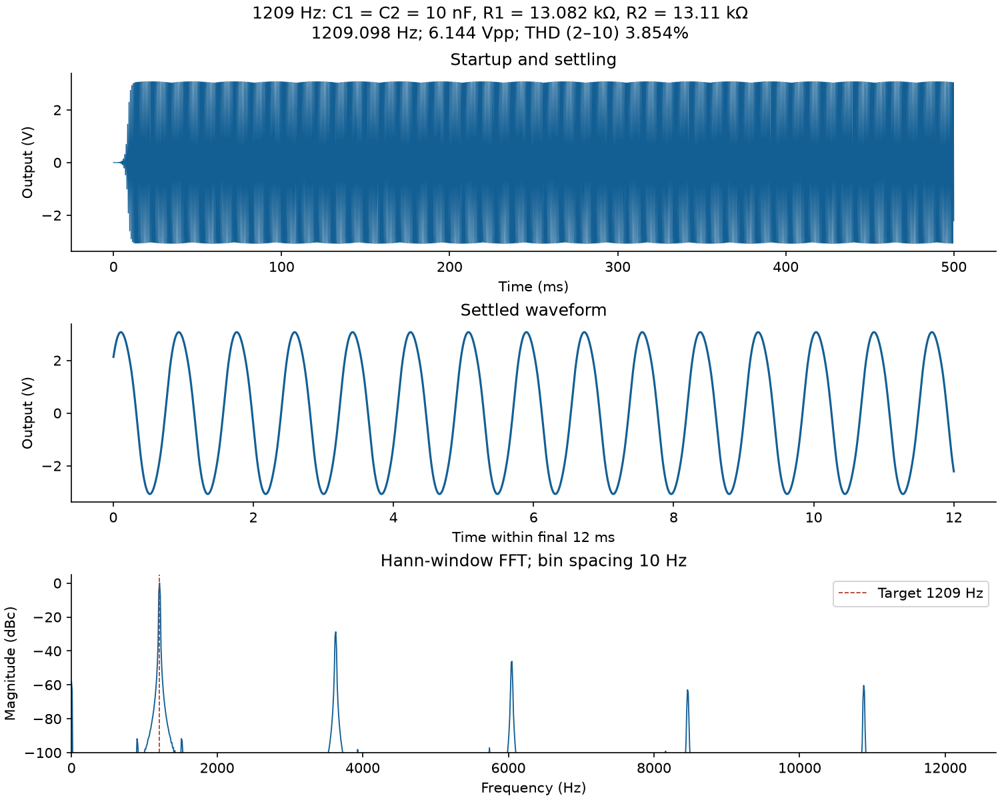
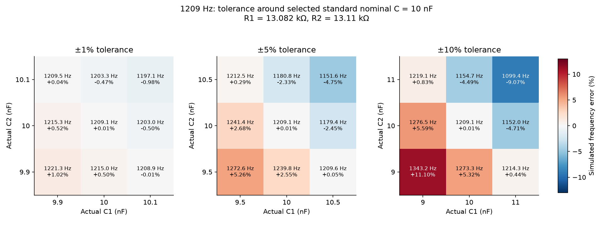

1,350 scenario rows; 1,250 unique physical circuits. The original circuit and resistor grids are retained.
Full interpretation · Tolerance comparison CSV
Selections use nominal capacitor values. ±1%, ±5%, and ±10% tolerance points are separate tests.
All simulation rows · Nominal ranking · Best pair at each nominal C
| C nF | R1 Ω | R2 Ω | Simulated Hz | Error % | THD % |
|---|---|---|---|---|---|
| 10 | 20620 | 20560 | 769.5837 | 0.0541 | 3.825 |
Closest nominal selection:
{
"case_id": "f770_16168637e27e",
"target_hz": 770,
"C_nominal_f": 1e-08,
"C_nominal_nF": 10.0,
"C_nominal_value_series": "E12/E24",
"R1_ohm": 20620.0,
"R2_ohm": 20560.0,
"R1_parts_ohm": "20000 + 620",
"R2_parts_ohm": "20000 + 560",
"resistor_count": 4,
"theory_zero_phase_hz": 772.9728607444741,
"simulated_frequency_hz": 769.5837490130649,
"simulated_abs_error_percent": 0.05405856973183078,
"steady_state_vpp_v": 6.0623731036666,
"thd_2_to_10_percent": 3.8253442437204415,
"settling_time_s": 0.02,
"oscillation_status": "settled_oscillation"
}

All simulation rows · Nominal ranking · Best pair at each nominal C
| C nF | R1 Ω | R2 Ω | Simulated Hz | Error % | THD % |
|---|---|---|---|---|---|
| 10 | 13082 | 13110 | 1209.0978 | 0.0081 | 3.854 |
Closest nominal selection:
{
"case_id": "f1209_046ac066d60b",
"target_hz": 1209,
"C_nominal_f": 1e-08,
"C_nominal_nF": 10.0,
"C_nominal_value_series": "E12/E24",
"R1_ohm": 13082.0,
"R2_ohm": 13110.0,
"R1_parts_ohm": "13000 + 82",
"R2_parts_ohm": "13000 + 110",
"resistor_count": 4,
"theory_zero_phase_hz": 1215.2950063751457,
"simulated_frequency_hz": 1209.0978384524221,
"simulated_abs_error_percent": 0.008092510539465532,
"steady_state_vpp_v": 6.144114608855222,
"thd_2_to_10_percent": 3.8538676106247736,
"settling_time_s": 0.02,
"oscillation_status": "settled_oscillation"
}


